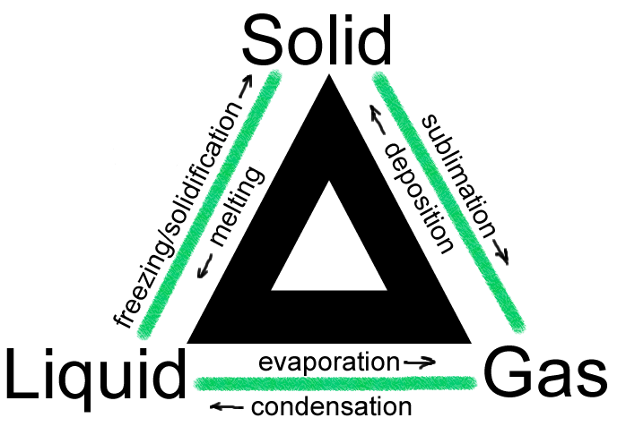

Solid
This shows that in solids, the particles are tightly packed. In solids, the kinetic energy of particles is way less.
Liquid (Interactive)
This shows that in liquids, the particles can move freely in a flow state but are more closely packed than the particles in gases. In liquids, the kinetic energy of particles is more than in solids.
Gas (Interactive)
This shows that in gases, the particles can move freely in a flow state, and the force of attraction is way less than in liquids, but the kinetic energy in particles is more than in liquids.
The kinetic energy also depends on the temperature. More temp = More energy, Less temp = Less energy.
The Kinetic Molecular Theory (KMT) explains the behavior of matter on a microscopic level. Picture tiny particles, like atoms or molecules, in constant motion. When we heat a substance, these particles move faster, and their temperature-dependent motion influences the substance's properties. These particles have space between them, collide, and transfer energy, which we perceive as temperature. The theory helps us understand the different states of matter—solid, liquid, and gas—based on particle arrangement and motion. Importantly, KMT assumes no attraction or repulsion between particles, emphasizing their constant, random motion as the driving force behind the observable characteristics of substances.
By - Alamjeet Singh
Other Sources- Jeff Thomas, PavelDoGreat